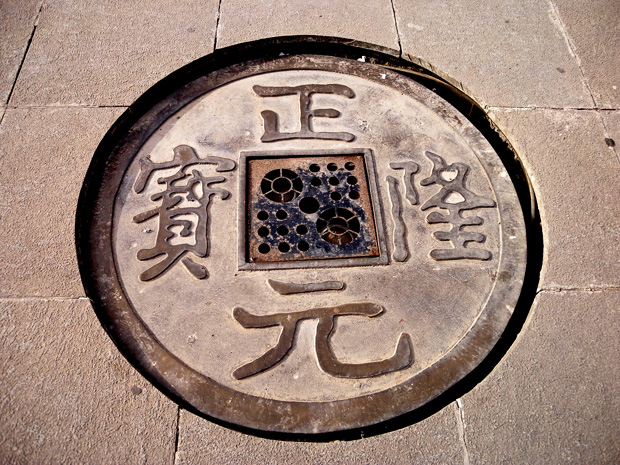
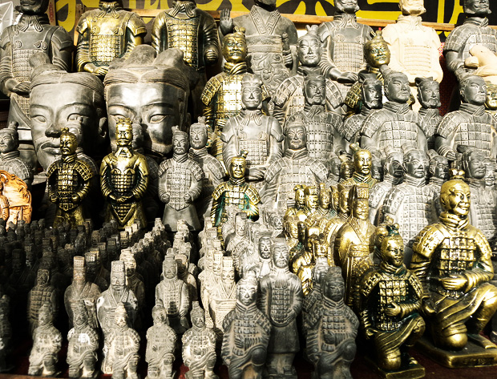
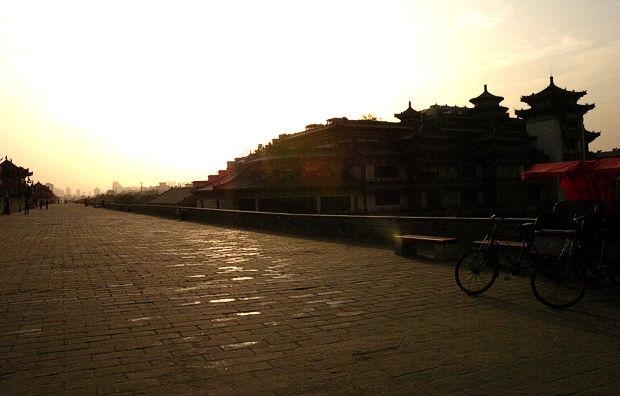
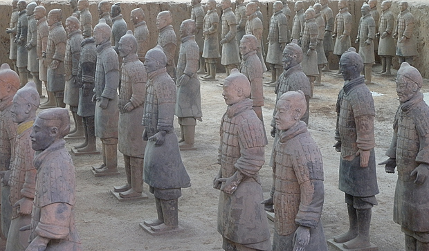
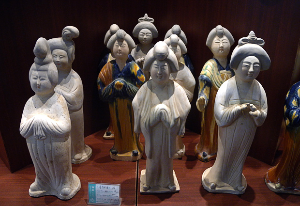
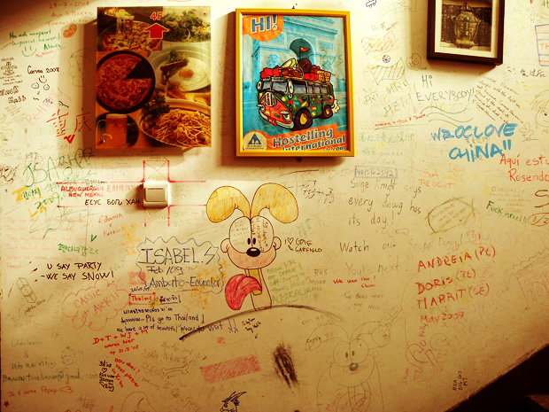

回到西安，气温比刚来那天高了不少，住下，洗完澡，时间尚早，于是按计划外出溜达。

鼓楼前的广场上，十几枚古钱币图案的井盖，历数千余年十几个朝代都城的辉煌。

回民街入口的文宝斋，处处可见大大小小的兵马俑，足以让人审美疲劳。以至于第二天见到真兵马俑的时候，都不觉得稀奇了。

行至南边的城墙，太阳正要落下。夕阳在静谧而宽阔的古城墙上泻下有些绵长久远的金碧辉煌。偶有三轮车或是骑自行车的游人从旁经过。城墙下一边是书院街清一色的灰瓦房，一边是公园里一群老人唱着秦腔，伴奏还用的是大提琴。

第二天一早去兵马俑，先是被导游拉着在秦岭地宫的模型里转了一圈，感叹秦始皇还真是一个心存天地宇宙的非凡人物。来到兵马俑坑，眼前的秦俑全是灰头土脸，比起小摊上金灿灿的兵马俑似乎除了高之外也没有别的亮点。

最喜欢的还是这种秦俑，仕女俑。但似乎只有彩陶的商品，没有真正的文物可以对照。

此次西安行，第一天住了窑洞，土得掉渣，第二天住了青年旅舍，又国际化了一回。很满意这次选的旅店，就在鼓楼附近，到哪儿都很方便，旁边就是回民街，当时就是想方便吃来着，虽然最终没觉得回民小吃有传说中的那么美味，但旅店还是挺有特点的，随时可见背包洋帅哥从前台进进出出，旅店到处墙上都写满了各种语言的驴友留言，立此存照，纪念我们在西安的最后一天。